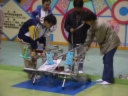
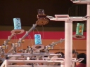
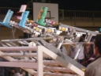
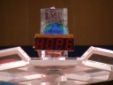

NHKロボットコンテスト'00
00年度に私たちが製作したマシンは「Quadra」。
名前の由来はマシンに搭載された４本のアームから。
その４本の造形物を置くロジャーアームと、
がっしょんがっしょん音を立てはしごをのぼる足がチャームポイント。
結果は地区大会2回戦敗退。
目標が「とりあえず1勝」だったから目標は達成かな？
この年は有志チームが技術賞をもらっていたので微妙なところ。




BACK
TOP